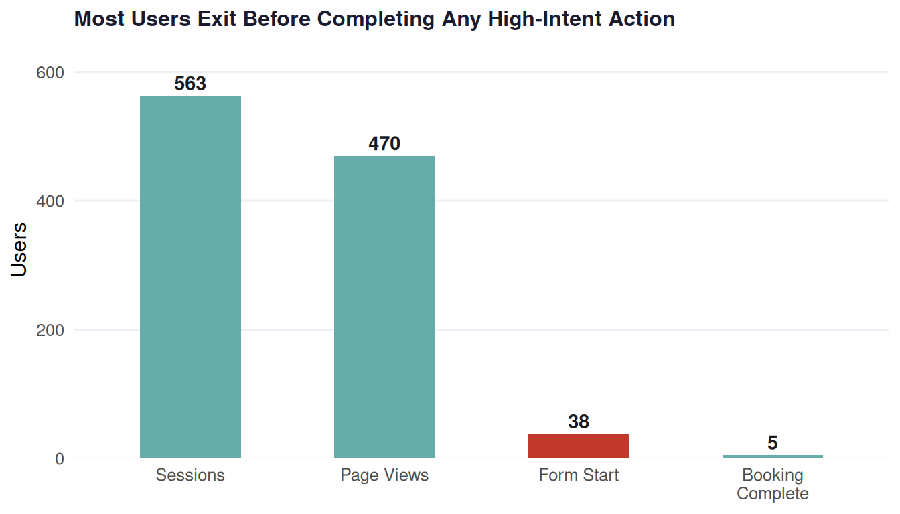
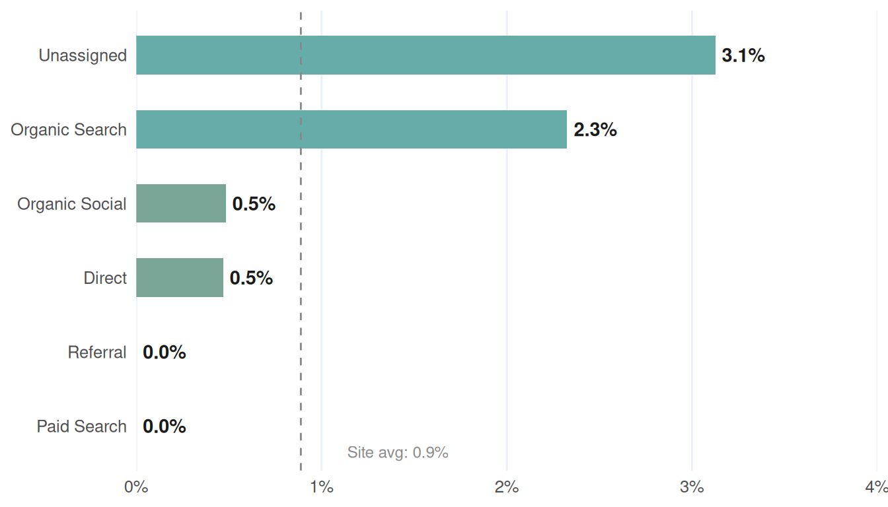

| Metric | Value |
|---|---|
| Total Sessions | 563 |
| Page View Users | 470 |
| Form Start Users | 38 |
| Bookings Completed | 5 |
| Page View Rate | 83.5% |
| Form Start Rate (of page views) | 8.1% |
| Booking Rate (of form starts) | 13.2% |
| Overall Conversion Rate | 0.9% |
| Largest Drop-off Stage | page_view → form_start (91.9% drop-off) |
Website Behavior & Booking Funnel Analysis
Analytics Objective 5 | Google Analytics 4 | Jan 1 – Apr 21, 2026
Project Overview
This report is part of a larger consulting engagement examining how digital marketing activity translates into customer bookings for a small service-based business. This objective focuses on website behavior and booking funnel optimization. Despite traffic arriving through multiple acquisition channels, the business lacked visibility into where visitors were dropping off and which channels were actually converting. This analysis uses GA4 event-level data to diagnose that gap.
The Problem
- No visibility into where users were leaving the site
- Traffic volume treated as a proxy for success
- Booking form drop-off untracked and unaddressed
- Channel quality vs. volume not distinguished
The Analytical Goal
- Map the four-stage booking funnel using GA4 events
- Identify the largest friction point in the user journey
- Segment funnel performance by traffic channel
- Validate patterns through subgroup analysis
Methodology
The method selected is a Descriptive Funnel Analysis using GA4 event-level exports. The funnel maps user progression through four sequential behavioral stages, using total users (not event count) throughout to avoid inflation from repeat-event firing within a single session.
Funnel Stages
Sessions
Entry point — all website visits; denominator for overall conversion rate
→
Page Views
Users engaging with site content; surface-level behavioral signal
→
Form Start
User begins filling the booking form — highest-intent observable action
→
Booking Complete
Form submitted — confirmed booking intent; the conversion event
Derived Metrics
| Metric | Formula |
|---|---|
| Page View Rate | page_view users ÷ sessions |
| Form Start Rate | form_start users ÷ page_view users |
| Booking Rate | booking_complete ÷ form_start users |
| Overall Conv. Rate | booking_complete ÷ sessions |
Traffic channel (GA4 Default Channel Group) is used as the primary segmentation variable, enabling comparison across six acquisition sources: Direct, Organic Search, Organic Social, Referral, Unassigned, and Paid Search.
Statistical Summary
Key Findings
The funnel narrows sharply and unevenly. The dominant friction point is the transition from page viewing to form initiation — a 91.9% drop-off rate that holds across every traffic channel.
Funnel: Most Users Exit Before Starting the Booking Form
Show figure code
funnel_long <- tibble(
stage = factor(
c("Sessions", "Page Views", "Form Start", "Booking\nComplete"),
levels = c("Sessions", "Page Views", "Form Start", "Booking\nComplete")
),
count = c(totals$sessions, totals$page_views,
totals$form_starts, totals$bookings),
highlight = c(FALSE, FALSE, TRUE, FALSE)
)
ggplot(funnel_long, aes(x = stage, y = count, fill = highlight)) +
geom_col(width = 0.52) +
geom_text(aes(label = comma(count)),
vjust = -0.4, size = 3.8, fontface = "bold", color = "#1A1A1A") +
scale_fill_manual(values = c("FALSE" = "#66ada9", "TRUE" = "#C0392B")) +
scale_y_continuous(expand = expansion(mult = c(0, 0.15))) +
labs(title = "Most Users Exit Before Completing Any High-Intent Action",
x = NULL, y = "Users") +
theme_ao5
Conversion Rate by Traffic Channel
Show figure code
ga4_data |>
mutate(
channel = fct_reorder(channel, overall_conv_rate),
above_avg = overall_conv_rate > site_avg
) |>
ggplot(aes(x = channel, y = overall_conv_rate, fill = above_avg)) +
geom_col(width = 0.52) +
geom_text(aes(label = percent(overall_conv_rate, accuracy = 0.1)),
hjust = -0.15, size = 3.8, fontface = "bold", color = "#1A1A1A") +
geom_hline(yintercept = site_avg, linetype = "dashed",
color = "#888888", linewidth = 0.5) +
annotate("text", x = 0.65, y = site_avg + 0.0025,
label = paste0("Site avg: ", percent(site_avg, accuracy = 0.1)),
size = 3.2, color = "#888888", hjust = 0) +
coord_flip() +
scale_fill_manual(values = c("FALSE" = "#7aa496", "TRUE" = "#66ada9")) +
scale_y_continuous(labels = percent_format(accuracy = 1),
expand = expansion(mult = c(0, 0.28))) +
labs(x = NULL, y = NULL) +
theme_ao5 +
theme(panel.grid.major.y = element_blank(),
panel.grid.major.x = element_line(color = "#edf0f7"))
Booking Funnel Performance by Traffic Channel
| Traffic Channel | Sessions | Page Views | Contact Us | Form Starts | Sched. Appts | Conv. Rate |
|---|---|---|---|---|---|---|
| Unassigned | 32 | 29 | 2 | 3 | 2 | 3.1% |
| Organic Search | 86 | 61 | 4 | 4 | 4 | 2.3% |
| Organic Social | 207 | 203 | 2 | 12 | 3 | 0.5% |
| Direct | 213 | 167 | 9 | 18 | 6 | 0.5% |
| Referral | 21 | 6 | 2 | 1 | 2 | 0.0% |
| Paid Search | 4 | 4 | 0 | 0 | 0 | 0.0% |
| TOTAL | 563 | 470 | 19 | 38 | 17 | 0.9% |
High-Intent Behavioral Signals
Schedule_Appointment and contact_us are link clicks to the page hosting the booking form. They are reported here as behavioral context rather than sequential funnel stages.
| Traffic Channel | Sessions | Sched. Appt Clicks | Contact Us Clicks | Form Starts | Bookings |
|---|---|---|---|---|---|
| Direct | 213 | 6 | 9 | 18 | 1 |
| Organic Social | 207 | 3 | 2 | 12 | 1 |
| Organic Search | 86 | 4 | 4 | 4 | 2 |
| Unassigned | 32 | 2 | 2 | 3 | 1 |
| Referral | 21 | 2 | 2 | 1 | 0 |
| Paid Search | 4 | 0 | 0 | 0 | 0 |
| TOTAL | 563 | 17 | 19 | 38 | 5 |
Recommendations
Redesign the Mid-Funnel Experience
The 91.9% drop-off between page views and form starts is the highest-leverage fix available. Strengthening calls to action, sharpening the value proposition, and reducing booking form friction can increase appointments without requiring additional marketing spend.
Prioritize Organic Search & SEO Investment
Organic Search converts at 2.3% — more than twice the site average and more than 4× the efficiency of Organic Social. Shifting content and budget investment toward this channel is likely to yield stronger returns than broad social reach alone.
Audit Channel Tracking & UTM Configuration
Unassigned traffic converts at 3.1% — the highest rate on the site — but its source is currently invisible. Auditing UTM tagging and GA4 configuration to properly classify this traffic is a critical step toward understanding what is driving the best results.
Deploy Purchase Event Tracking via Google Tag Manager
Current tracking measures booking form submissions — not completed purchases. Configuring GTM to capture purchase completions will allow future analyses to connect marketing activity to actual revenue outcomes, enabling true ROI measurement.
Appendix
R Packages
| Package | Role |
|---|---|
| tidyverse | Data wrangling and visualization (dplyr, ggplot2, readr) |
| scales | Percent and comma formatting for labels |
| knitr / kableExtra | Table rendering with custom styling |